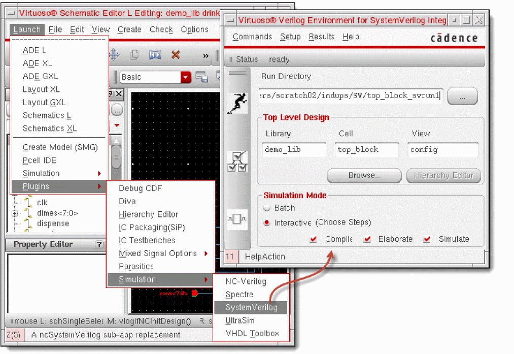
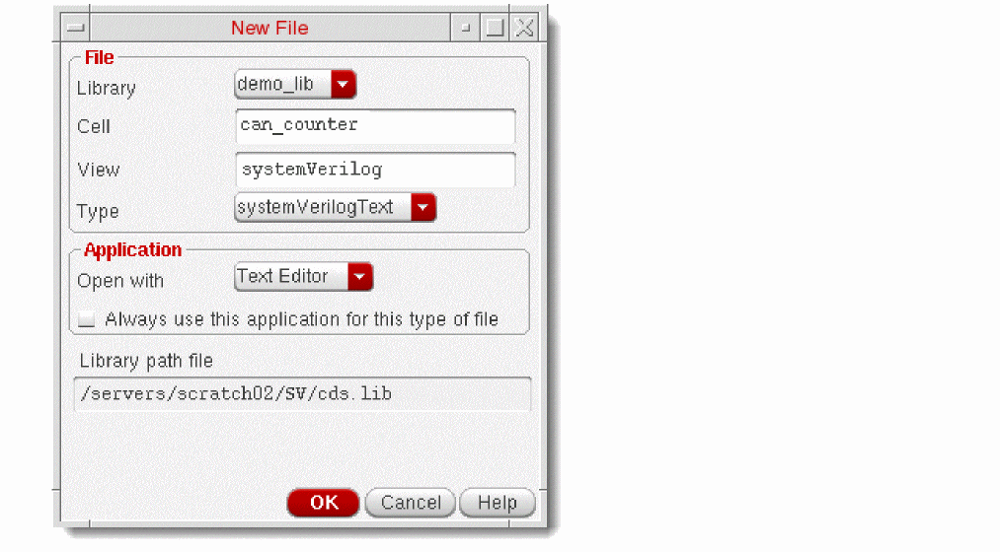
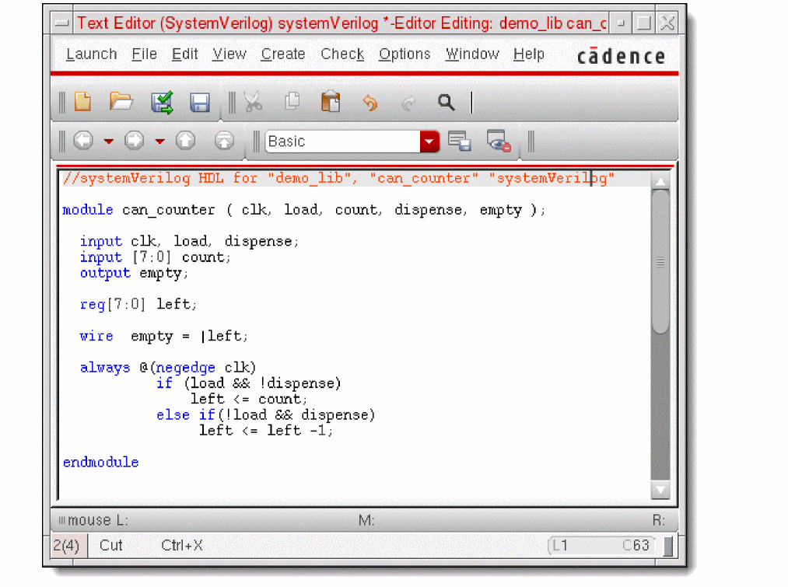
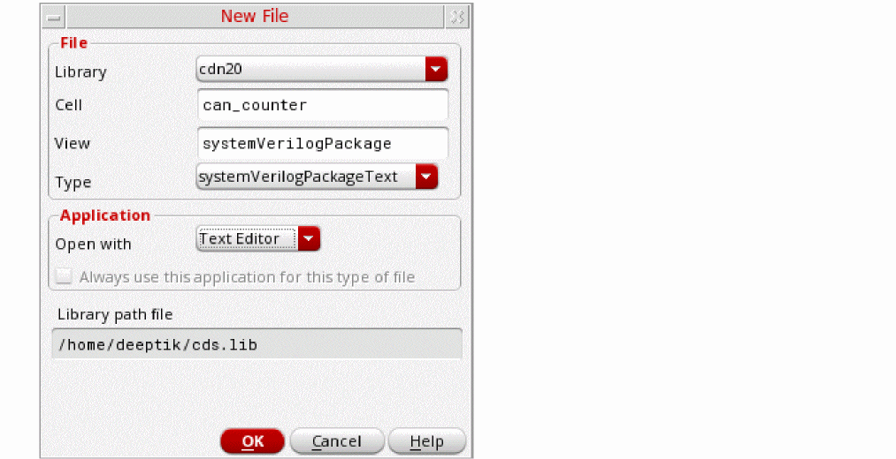
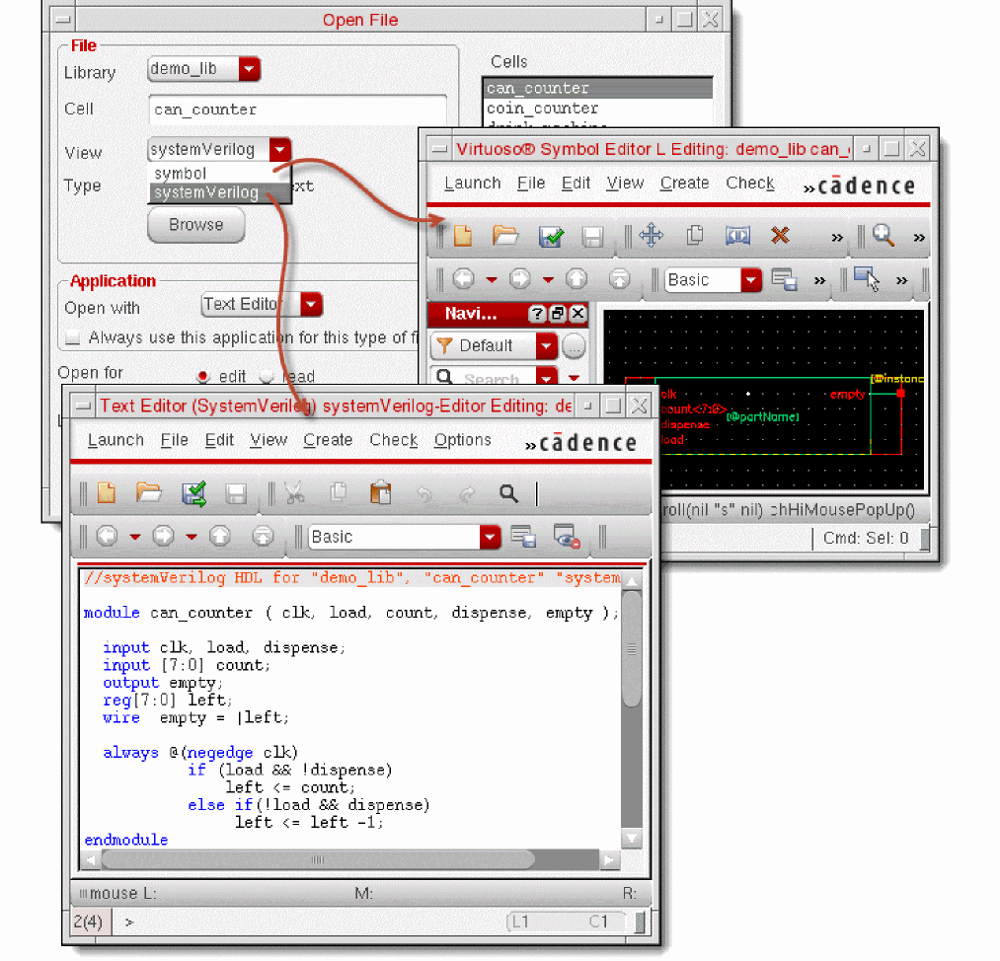

1
Introducing SystemVerilog Integration Environment
Virtuoso® Verilog Environment for SystemVerilog Integration (SystemVerilog Integration Environment) is an environment for generating netlists of SystemVerilog-based digital designs. This environment also integrates with other Cadence tools to simulate and debug designs.
This chapter includes the following topics.
- Key Features
- Netlist Generation and Design Simulation Flow
- Tool Requirements
- Graphical User Interface
- About Creating SystemVerilog-Based Designs
Key Features
SystemVerilog Integration Environment provides a methodology to netlist and simulate SystemVerilog-based designs. This methodology includes the following stages:
- Initialize the run directory for storing the netlist and simulation data.
- Generate the netlist of the design that describes the connectivity of the design.
- Simulate the design using the generated netlist as an input.
SystemVerilog Integration Environment provides the following key features and capabilities:
- A graphical user interface and a command line interface
- Various options for configuring netlist generation and design simulation
- Support for various SystemVerilog data types, such as release interface, custom, wire, reg, logic, string, and event
- Data type progression from leaf-level SystemVerilog cellviews to top-level schematic design hierarchy, and an option to override the progression
- Netlist generation for configuration and non-configuration based designs
- Netlist generation and simulation of mixed-language design where Verilog and SystemVerilog views coexist at the leaf level
- Support for handling packed and unpacked arrays in the design during netlist generation
- Awareness of the following file extensions:
- Design simulation in the following modes:
- Integration with Cadence® SimVision to let you simulate and debug designs in interactive mode
Netlist Generation and Design Simulation Flow
The following figure illustrates the flow through which SystemVerilog Integration Environment generates a netlist of a design and simulates that design.
The generic steps for using SystemVerilog Integration Environment are as follows:
-
Create your design. The design can have Verilog and SystemVerilog cellviews coexisting at the leaf level. Virtuoso lets you create a SystemVerilog text-only cellview and a symbol for it, which you can integrate in your design. For details, see “About Creating SystemVerilog-Based Designs”.
-
Open the top cellview of the design in Virtuoso Schematic Editor L or XL and launch SystemVerilog Integration Environment. You can open the schematic view or the configuration view of the design.
For details, see “Launching the Graphical User Interface”. -
Initialize the run directory for netlist generation and design simulation.
For details, see “Initializing the Run Directory”. -
Set options for netlist generation and generate the netlist of the design.
SystemVerilog Integration Environment also creates a map file containing:- The netlist configuration options.
- Map of the names used in the netlist and their corresponding name in the design.
You can view contents of the netlist and the map file.
For details, see “Netlisting a Design”. -
Set options for simulating the design. You can also set the testbench and stimulus. Then choose the batch or interactive mode and start the simulation.
If you choose the interactive mode, SystemVerilog Integration Environment launches SimVision to simulate the design after the design compilation and elaboration is complete.
If you choose the batch mode, the environment simulates the design in the background. The environment provides a window to monitor the status of design simulation in the batch mode.
For details, see “Simulating a Design”. - Analyze simulation results as required.
If you encounter issues using SystemVerilog Integration Environment, refer to the log that the environment displays in the Virtuoso CIW. It also displays the status of the last operation on the main form.
Tool Requirements
You launch SystemVerilog Integration Environment from the Virtuoso Schematic Editor L or XL.
To perform its operations, SystemVerilog Integration Environment requires the following tools:
-
Cadence
xrunutility
Thexrunutility is used to simulate a design. It specifies all the input files and options in a single command line.
Thexrunutility can take SystemVerilog and Verilog files as inputs. The utility uses the Native Code tools to compile, elaborate, and simulate the design.The executable and log file names will depend on the simulator being used. For the changes in the executable and log file names when using the Xcelium simulator, see Running Simulations with Xcelium -
Cadence Native Code (NC) tools
The xrun utility uses the following NC tools to simulate designs: -
Cadence SimVision
SimVision provides an environment for simulating and debugging digital designs written in SystemVerilog or a mix of Verilog and SystemVerilog languages. SystemVerilog Integration Environment launches this tool after design compilation and elaboration is completed in the interactive mode.
Graphical User Interface
You can use SystemVerilog Integration Environment from its graphical user interface and command line interface.
This section provides information on the following topics:
For information on the command line interface, see “Using Standalone Mode”.
Launching the Graphical User Interface
To launch the graphical user interface of SystemVerilog Integration Environment:
- Open the top cell of your SystemVerilog-based design in Virtuoso Schematic Editor L or XL. You can open the top cell using the schematic view or the configuration view.
-
Choose Launch — Plugins — Simulation — SystemVerilog. The main form of SystemVerilog Integration Environment appears.

Understanding the Graphical User Interface
The following figure illustrates the main form of SystemVerilog Integration Environment.
The following table describes the main form components.
|
Access the following menus to perform various operations.
|
|
|
Click the following shortcut toolbar option to perform tasks.
|
|
|
Shows the status of the last operation. The status can be:
|
|
|
Specify the run directory for storing the netlist, simulation, and waveform data. For details, see “Initializing the Run Directory”. |
|
|
Specify the library, cell, and view of the top-level design. By default, the environment displays the library, cell, and view of the design opened in Virtuoso Schematic Editor, from where you launched the environment. You can change this design reference. For details, see “Initializing the Run Directory”. |
|
|
Specify the simulation mode. You can select Interactive or Batch mode of simulation. For details, see “Simulating a Design”. |
|
|
Displays help tips on the selected user-interface component. |
About Creating SystemVerilog-Based Designs
Virtuoso lets you create a SystemVerilog text-only cellview and a symbol for this cellview, which you can use in your SystemVerilog-based design. You can create and manage your design using the Virtuoso Schematic Editor, and netlist and simulate this design using SystemVerilog Integration Environment.
For information on working with designs, see the Virtuoso Schematic Editor L User Guide.
cdsTextTo5x command. This command also lets you generate the symbol views of the imported cellviews. For details, see Importing Design Data by Using cdsTextTo5x. You can also use this command to create text cellviews (5x structure), symbol views, and shadow database for SPICE, Spectre, DSPF, and PSpice.You can also generate the text database for a given cellview without opening the Text Editor, using the hdlGenerateTextDatabase SKILL function:
To create a SystemVerilog cellview and symbol:
-
Choose File — New — Cellview from the Virtuoso menu. The New File form appears.
 -
Specify the cellview details.
-
Click OK.
Virtuoso creates a blank SystemVerilog cellview and stores it as LibraryName/cellName/viewName/verilog.sv. It also displays this file in Virtuoso Text Editor. -
Add your SystemVerilog cellview code and save the file.
Virtuoso parses the file. It prompts you to correct any syntax errors in the file.
The following figure illustrates an example of a SystemVerilog cell.
After parsing the file that does not have any syntax errors, Virtuoso prompts you to save its symbol. - Click Yes on the prompt to save the symbol of the new cell.
Cellview can_counter symbol does not exist.
Symbol (can_counter symbol) generated and saved in library:demo_lib.
Processing Completed
errors:0, warnings:0
To open the new cellview or symbol for verification:
- Choose File — Open from the Virtuoso menu. The Open File form appears.
- Select the library, cell, and view of the new cellview file. You can choose to view the symbol or the SystemVerilog text-only view.
- Click OK. You can verify the text-only SystemVerilog view or symbol. See the following figure.
To create a SystemVerilog package view:
-
Choose File — New — Cellview from the Virtuoso menu. The New File form appears.
 -
Specify the package view details.
-
Click OK.
Virtuoso creates a blank SystemVerilog cellview and stores it as LibraryName/cellName/viewName/package.sv. It also displays this file in Virtuoso Text Editor. -
Add your SystemVerilog package view code and close the file.
Virtuoso parses the file. It prompts you to correct any syntax errors in the file.

Return to top